Home / Past papers / MLF Quiz 2 / this paper
IIT M DIPLOMA AN EXAM QDD2 24 Mar 2024 - 24 Mar 2024
Elapsed 00:00
Consider two complex matrices A and B such that both are the Hermitian matrices. Which of the following statements is/are true?


Comprehension passage - the questions below it refer to this

Which of the following statements is/are true about A?
- A is the Hermitian matrix.
- A is the Unitary matrix.
- All eigenvalues are real.
- Eigenvalues are complex.
Which of the following statements is/are true about A?
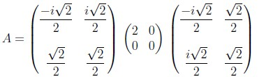
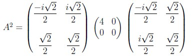
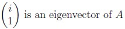
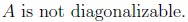
Comprehension passage - the questions below it refer to this
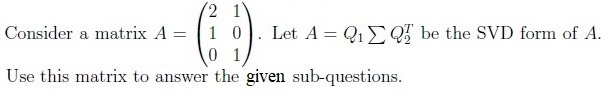
Which of the following options is/are true?
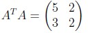
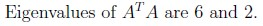
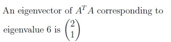
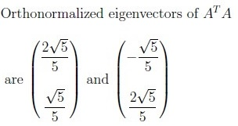
Which of the following options is/are true?
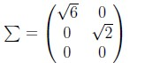
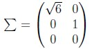
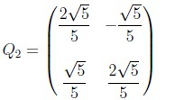
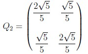
Comprehension passage - the questions below it refer to this
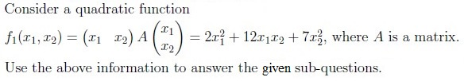
Which of the following options represents matrix A?
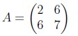
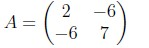
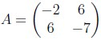
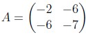
Which of the following options is/are true?
- A is a negative definite matrix.
- A is a positive definite matrix.
- A is a negative semi-definite matrix.
- A is a positive semi-definite matrix.
- A is a indefinite matrix.
Comprehension passage - the questions below it refer to this
Based on the above data, answer the given subquestions
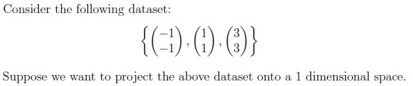
Compute the sample covariance matrix C for the given dataset.
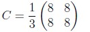
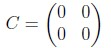
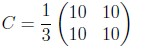
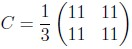
Which is the principal direction that is chosen for performing PCA?
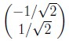
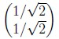
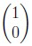
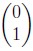
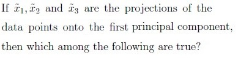
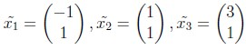
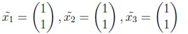
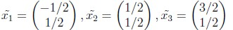
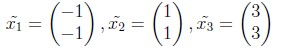

- A is positive definite.
- A is positive semi-definite.
- A is negative definite.
- A is negative semi-definite.
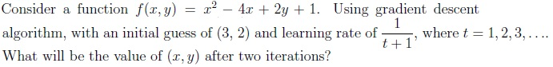
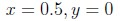
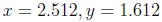
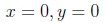
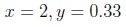
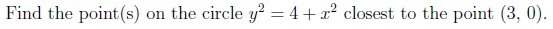
- -1.5, -2.5
- 1.5, 2.5
- 1.5, -2.5
- -1.5, 2.5
The value of a function at point 5 is 10. The values of the function’s first and second order derivatives at this point are 5 and 2 respectively. What will be the function’s approximate value at the point 5.1? (Enter the answer correct up to two decimal places).
Answer key
- Q1 (MSQ, 3 marks): A, B
- Q2 (MSQ, 3 marks): A, C
- Q3 (MSQ, 3 marks): A, B, C
- Q4 (MSQ, 3 marks): C, D
- Q5 (MSQ, 3 marks): B, C
- Q6 (MCQ, 2 marks): A
- Q7 (MCQ, 3 marks): E
- Q8 (MCQ, 3 marks): A
- Q9 (MCQ, 3 marks): B
- Q10 (MCQ, 3 marks): D
- Q11 (MCQ, 2 marks): A
- Q12 (MCQ, 3 marks): D
- Q13 (MCQ, 3 marks): B
- Q14 (SA, 3 marks): 10.2 to 10.8